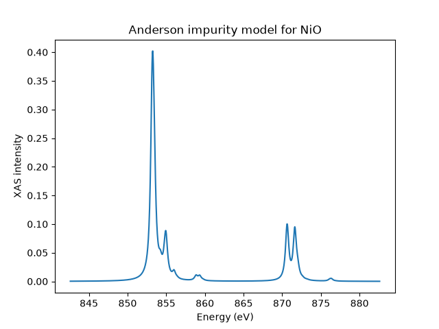

Note
Go to the end to download the full example code.
Anderson impurity model for NiO XAS
Here we calculate the \(L\)-edge XAS spectrum of an Anderson impurity model, which is sometimes also called a charge-transfer multiplet model. This model considers a set of correlated orbitals, often called the impurity or metal states, that hybridize with a set of uncorrelated orbitals, often called the ligands or bath states. Everyone’s favorite test case for x-ray spectroscopic calculations of the Anderson impurity model is NiO and we won’t risk being original! This means that our correlated states will be the Ni \(3d\) orbitals and the uncorrelated states come from O \(2p\) orbitals. The fact that we include these interactions means that our spectrum can include processes where electrons transition from the bath to the impurity, as such the Anderson Impurity Model is often more accurate than atomic models, especially if the material has strong covalency.
When defining the bath states, it is useful to use the so-called
symmetry adapted linear combinations of orbitals as the basis. These states
take into account the symmetry relationships between the different bath atom
orbitals and the fact that there are bath orbital combinations that do not
interact with the impurity by symmetry. By doing this the problem can be
represented with fewer orbitals, which makes the calculation far more efficient.
The standard EDRIXS solver that we will use assumes that the bath states are
represented by an integer number of bath sites set by nbath, each of
which hosts the same number of spin-orbitals as the impurity e.g. 10 for a
\(d\)-electron material.
NiO has a rocksalt structure in which all Ni atoms are surrounded by six O atoms. This NiO cluster used to simulate the crystal would then contain 10 Ni \(3d\) spin-orbitals and \(6\) spin-orbitals per O \(\times 6\) O atoms \(=36\) oxygen spin-orbitals. As explained by, for example, Maurits Haverkort et al. in [1] symmetry allows us to represent the bath with 10 symmetry adapted linear combinations of the different O \(p_x, p_y, p_z\) states. The crystal field and hopping parameters for such a calculation can be obtained by post-processing DFT calculations. We will use values for NiO from [1]. If you use values from a paper the relevant references should, of course, be cited.
import edrixs
import numpy as np
import matplotlib.pyplot as plt
Number of electrons
We use a nominal Ni d8 impurity and a full bath of ten spin-orbitals.
The bath orbitals are ligand combinations with d-like symmetry, not a second
correlated atomic d shell. model_siam_2d1p() fixes one
such bath and a p core. It infers 18 initial valence electrons from nd=8.
Hybridization redistributes these electrons while conserving their total.
All model energies and hoppings below are in eV.
Coulomb interactions
The atomic Coulomb interactions are usually initialized based on Hartree-Fock calculations from, for example, Cowan’s code. edrixs has a database of these.
info = edrixs.utils.get_atom_data('Ni', '3d', nd, edge='L3')
The atomic values are typically scaled to account for screening in the solid. Here we use 80% scaling. Let’s write these out in full, so that nothing is hidden. Values for \(U_{dd}\) and \(U_{dp}\) are those of Ref. [1] obtained by comparing theory and experiment [2] [3].
scale_dd = 0.8
F2_dd = info['slater_i'][1][1] * scale_dd
F4_dd = info['slater_i'][2][1] * scale_dd
U_dd = 7.3
F0_dd = U_dd + edrixs.get_F0('d', F2_dd, F4_dd)
scale_dp = 0.8
F2_dp = info['slater_n'][4][1] * scale_dp
G1_dp = info['slater_n'][5][1] * scale_dp
G3_dp = info['slater_n'][6][1] * scale_dp
U_dp = 8.5
F0_dp = U_dp + edrixs.get_F0('dp', G1_dp, G3_dp)
slater = ([F0_dd, F2_dd, F4_dd], # initial
[F0_dd, F2_dd, F4_dd, F0_dp, F2_dp, G1_dp, G3_dp]) # with core hole
Charge-transfer energy
Delta is the energy cost of transferring an electron from the ligand bath to the impurity: \(\Delta = E(d^{n_d+1}\underline{L}) - E(d^{n_d})\). This definition uses configuration-average energies without crystal field, hybridization, or multipolar Coulomb interactions. It is not the bare one-electron separation between the impurity and bath centers.
Delta = 4.7
Orbital energies and hybridization
Supply five real-harmonic orbital energies in the order (dz2, dzx, dzy, dx2-y2, dxy). Each value applies to both spins. The wrapper subtracts the mean of each set before adding its CT-derived center. Thus Delta controls the shell alignment independently of any common offset in these input energies. For cubic symmetry the two eg orbitals lie at +0.6*10Dq and the three t2g orbitals at -0.4*10Dq.
ten_dq = 0.56
impurity_levels = ten_dq * np.array([0.6, -0.4, -0.4, 0.6, -0.4])
ten_dq_bath = 1.44
bath_levels = ten_dq_bath * np.array([0.6, -0.4, -0.4, 0.6, -0.4])
Each hopping connects matching impurity and bath orbitals, with the same amplitude for both spins and both states. We use the eg and t2g values from Ref. [1]. The wrapper handles spin duplication and basis conversion.
Spin-orbit coupling
v_soc contains the initial and intermediate impurity SOC constants. We keep the same impurity SOC in both states to preserve this example’s original parameterization. To use the separate atomic core-hole value instead, pass v_soc=(zeta_d_i, zeta_d_n). The p-core SOC is supplied separately as c_soc.
We now need to define the parameters describing the XAS. X-ray polarization can be linear, circular or isotropic (appropriate for a powder).
poltype_xas = [('isotropic', 0)]
edrixs uses the temperature in Kelvin to work out the population of the low-lying states via a Boltzmann distribution.
temperature = 300
The x-ray beam is specified by the incident angle and azimuthal angle in radians
these are with respect to the crystal field \(z\) and \(x\) axes
written above. (That is, unless you specify the loc_axis parameter
described in the edrixs.model_siam_2d1p function documentation.)
om_shift aligns the calculated XAS with the experimental Ni L edge. The wrapper combines this shift with its CT-derived core energy E_p through c_level = -om_shift - 5*E_p. Increasing om_shift raises the transition energies by the same amount. We center the photon-energy grid on this value.
om_shift = 857.6
ominc_xas = om_shift + np.linspace(-15, 25, 1000)
The core-hole lifetime broadening is a half-width at half-maximum.
You can either pass a constant value or an array the same size as
ominc_xas with varying values to simulate, for example, different state
lifetimes for higher energy states.
gamma_c = np.full(ominc_xas.shape, 0.48/2)
Magnetic field is a three-component vector in eV specified with respect to the
same local axis as the x-ray beam. on_which = 'both' applies the
operator to the total spin plus orbital angular momentum, as is appropriate
for a physical external magnetic field. Passing on_which = 'spin'
instead applies it to spin only, which is a convenient way to impose a
magnetic order direction on the sample. The Bohr magneton
\(\mu_B = 5.7883818012\times 10^{-5}\) eV/T is useful for converting
a physical field strength. Here we mimic magnetic order with an exchange
energy of \(6 \times 0.027\) eV directed along \([112]\).
Build the model
model_siam_2d1p() constructs the orbital-space model
from the parameters above. It builds the one-body matrices, Coulomb tensors,
and Fock-basis metadata; diagonalization remains a separate step. The returned
i quantities describe initial/final states without a core hole, while the n
quantities describe the intermediate state with a core hole. Both one-body
matrices have shape (26, 26), and both Coulomb tensors include core orbitals.
The initial basis is ((20, 18), (6, 6)); the occupancy nd+10 counts only
impurity and bath electrons. Initial core interactions are active when supplied.
trans_mat holds
the Cartesian dipole matrices. General bath or hopping matrices can instead
be supplied through model_siam().
Diagonalization
get_ops() converts these backend-independent
ingredients into many-body initial/final and intermediate Hamiltonians, plus
the dipole operators that map the initial Fock space to the intermediate one.
Here we
select the SciPy backend, which represents the Hamiltonians as sparse matrices
and extracts the lowest eigenpairs on a single process.
ed() obtains the retained low-energy eigenpairs of the
Hamiltonian without a core hole. Here num_evals=3 states are
thermally populated at the temperature of interest.
Compute XAS
The spectrum is built by applying the dipole operators to the thermally
populated initial states and propagating in the intermediate-state
Hamiltonian. EDRIXS weights the retained eigenstates by their Boltzmann
factors at temperature. Because our model includes hybridization,
the spectrum captures charge-transfer processes in which electrons move
between the O bath and the Ni impurity.
Let’s plot the data and save it just in case. The returned array has shape
(len(ominc_xas), len(poltype_xas)).
if __name__ == "__main__":
fig, ax = plt.subplots()
ax.plot(ominc_xas, xas[:, 0])
ax.set_xlabel('Energy (eV)')
ax.set_ylabel('XAS intensity')
ax.set_title('Anderson impurity model for NiO')
plt.show()
np.savetxt('xas.dat', np.column_stack((ominc_xas, xas)))

Footnotes
Total running time of the script: (0 minutes 0.306 seconds)